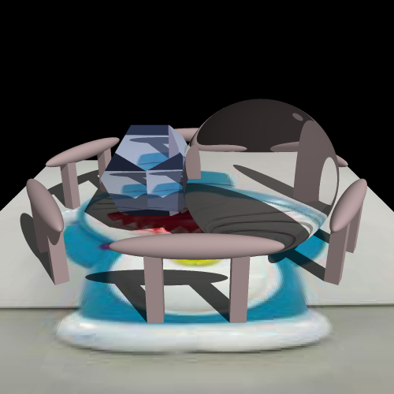

Refraction
Refraction is essential to any image involving water.
The following is an fairly basic image created with a refractive polyhedron and sphere.
(More interesting scenes with refraction will come later when the water comes into play.)

Prev
Next